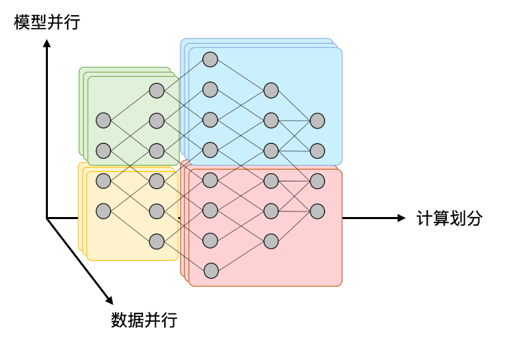

一。同步问题（条件变量）
-
线程同步：在某个时间点，所有线程共同达到了互相已知的状态。
-
我们之前学过
Join()函数的简单实现：当线程完成的数量和线程总数不相等，done != total，Main进程就进入循环等待，这或许比较占用时间；- 一个简化的思想，如果当前条件不被满足时，**我们令该线程进入
Sleep状态；直到被其他线程唤醒（当他们结束的时候？）**并再次判断。
- 一个简化的思想，如果当前条件不被满足时，**我们令该线程进入
-
生产者-消费者模型：想象你有一个 Buffer，当你在满足一定条件的时候（比如Buffer有空间），你可以往这个Buffer中放入一个任务；当满足另一条件时（比如Buffer非空），你可以从这个Buffer中取出一个任务并执行。
- 对于任一任务，你可以把该任务划分至若干层：每一层对应了可以并行的子任务，交给线程并行执行；等到所有线程执行完毕后（Join），向下一层执行。
- 线程的同步是有开销的，因此划分层不能太细。
-
同步方法论：由 条件不成立等待 与 条件达成继续 两部分构成。
- “同步达成的条件” 不如将思路逆转过来，“执行什么操作后，才能有同步的可能？”
- 引入
wait(cv, mutex)和notify(cv)方法： - 不满足同步条件就等待，对象是一个条件变量
cv，睡眠前释放锁mutex。 - 当执行了可以允许其他线程同步的操作后，就通告等待对应条件变量
cv的线程。
利用条件变量解同步问题的部分代码：
mutex_t lk = MUTEX_INIT();
cond_t cv = COND_INIT();
// 初始化锁、条件变量；
void Tproduce() {
while (1) {
mutex_lock(&lk);
// 先获得一把锁；
while (!CAN_PRODUCE) {
cond_wait(&cv, &lk);
// 当条件不满足时，在 cv 上等待；
}
count++;
cond_broadcast(&cv);
// 广播所有等候在 cv 上的线程；
mutex_unlock(&lk);
// 最后记得要释放锁；
}
}
二。信号量：条件变量的特例
- 每个信号量
sem内包含了一个计数器，支持P操作和V操作。P(sem)相当于wait，在计数器大于零时，使计数器减一；V(sem)相当于post，使计数器加一；
- 当
Count=1时，互斥锁是信号量的特例；Counter描述的是剩余资源的数量；
信号量伪代码实现：
void P(sem_t *sem) {
wait_until(sem->count > 0) {
sem->count--;
}
}
void V(sem_t *sem) {
sem->count++;
}
- 信号量的三种典型应用：
- 可以实现一次临时的
happens_before同步：- 如果要先执行A后执行B，则创建新的信号量S=0；
- 线程一：
A; V(s)，线程二：P(s); A
- 可以实现记数类型的同步，以
join为例：- 初始创建信号量
done=0； Tworker: V(done); Tmain: P(done) *n次
- 初始创建信号量
- 实例：实现计算图
- 如果想把任一串行的算法并行化，就应该先整理出数据之间的依赖关系，得到该算法的计算图，该图由计算节点和依赖边组成。
- 对于每一个计算节点，分配一个线程：
- 对每条入边执行
P(wait)操作； - 完成计算任务；
- 对每条出边执行
V(post)操作；
- 对每条入边执行
- 但计算图过大时，创建那么多线程和信号量也不太现实。
- 考虑借助静态划分、动态调度的手段解决问题；
- 可以实现一次临时的
哲学家吃饭问题
-
经典同步问题：哲学家 (线程) 有时思考，有时吃饭：
- 吃饭需要同时得到左手和右手的叉子；
- 当叉子被其他人占有时，必须等待，如何完成同步？
-
把信号量当互斥锁：先拿一把叉子，再拿另一把叉子
- 可能会出现死锁，如何解决？
- 保证任何时候至多只有 4 个人可以吃饭；
- 设置一个
Leader线程，负责所有叉子的调度；
三。现实世界中的并发问题
-
高性能计算中的并行编程
- 数值密集型的科学计算任务；
- 将大的模型划分成小块，小块间关联不大；
- 利用并发解决大计算任务，可**“静态切分”**；
-
数据中心里面的并发编程
- 数据中心程序的特点：
- 由
network of computing and storage resources组成； - 用以提供互联网引擎搜索、社交网络等服务；
- 实现分布式存储和计算系统：CAP 原则；
- 可利用多线程并行解决数万条请求：事件驱动；
- 由
- 协程： 操作系统 “不感知” 的上下文切换；
- 协程和线程概念相同，同样拥有独立堆栈和共享内存；
- 但是，协程会一直执行，直到
yield()主动放弃； - 这样就可以减少所需的寄存器，降低切换开销；
- 数据中心程序的特点：
-
深度学习时代的并发编程
- 既是计算密集，又是数据密集；
- 将模型划分成多层并行训练，并且将数据划分为多个 Batch；
- 
- 如何计算密集部分？
Single Instruction, Multiple Threads：只需要一条指令，就可以在多个执行流上同时执行一段机器码；Single Instruction, Multiple Data：只需要一个 Tensor 指令，就可以完成一个混合精度 的矩阵计算；